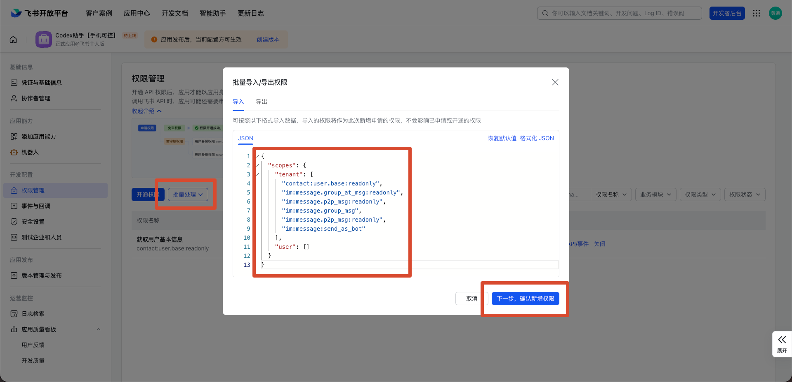

它解决的真实场景
核心理解：飞书只是入口，真正执行任务的是你电脑上的 Codex CLI。你在手机飞书发一句话，本机工具收到后交给 Codex 执行，再把结果回到飞书。
离开电脑前
出门、开会、做饭、通勤前，把任务先丢给 Codex 跑起来。
碎片时间里
用手机发起排查、总结、改文档、看项目结构，不用回到电脑前才开始。
1. 先装好工具
打开终端，复制下面这一行，按回车。
npm install -g https://github.com/snake-mustang/sy-feishu-connect/archive/refs/heads/main.tar.gz如果提示没有
npm，先安装 Node.js。管理员发布 npm 包之前，本地测试可以在仓库目录运行 npm link。2. 检查是否可用
复制这一行：
sy-feishu-connect doctor希望看到：
✅ Node.js // 负责运行全局命令
✅ Codex CLI // 真正执行开发任务，只支持 Codex CLI
✅ sy-feishu-connect core // 连接飞书和 Codex 的核心程序3. 生成配置
复制这一行：
sy-feishu-connect setup如果你是从 GitHub 下载的完整文件夹，也可以直接双击根目录里的
双击打开配置工具.command（Mac）或 双击打开配置工具.bat（Windows）。1
配置文件保存在哪里
不懂就直接回车，默认保存到
不懂就直接回车，默认保存到
~/.sy-feishu-connect/config.toml。2
Codex 工作目录
可以不填，直接回车会使用用户目录；如果要操作某个项目，再填项目路径。
可以不填，直接回车会使用用户目录；如果要操作某个项目，再填项目路径。
3
App ID / App Secret
点这里进入飞书开发者后台，在你的应用里打开「凭据与基础信息」复制。
点这里进入飞书开发者后台，在你的应用里打开「凭据与基础信息」复制。
4
姓名-中文
必填，例如
必填，例如
张三。只用于统计安装和使用成功率。配置会保存到 ~/.sy-feishu-connect/config.toml。App ID 和 App Secret 会写进 [feishu] 这一段：
[feishu]
app_id = "cli_xxxxxxxxxxxxx"
app_secret = "xxxxxxxxxxxxxxxxxxxxx"
domain = "feishu"配置生成后，先去飞书后台做下面 6 件事，再运行
sy-feishu-connect start。4. 飞书后台必须手动做的 6 件事
创建企业自建应用打开 飞书开发者后台，创建企业自建应用，名称建议填
Codex 助手。启用机器人打开 飞书开发者后台，进入你的应用，路径：应用后台 ->「应用能力」->「机器人」。
复制 App ID 和 App Secret打开 飞书开发者后台，进入你的应用，路径：应用后台 ->「凭据与基础信息」。
添加权限进入「权限管理」，按下面的 JSON 批量导入消息权限。
添加事件进入「事件与回调」，选择长连接，订阅
im.message.receive_v1 和 application.bot.menu_v6。配置菜单并发布进入「机器人自定义菜单」，配置 4 组底部栏；最后到「版本管理与发布」创建版本并发布。

事件与回调：选择「使用长连接接收事件」。

添加事件：至少添加
im.message.receive_v1，菜单还需要 application.bot.menu_v6。
底部栏：推荐 4 组，会话、执行、设置、显示。

子菜单：响应动作选「推送事件」，事件 ID 填固定值。
5. 权限和事件照着填
权限管理里添加
更简单的方式：在「权限管理」点击「批量处理」->「批量导入」，直接粘贴下面这段 JSON。

{
"scopes": {
"tenant": [
"contact:user.base:readonly",
"im:message.group_at_msg:readonly",
"im:message.p2p_msg:readonly",
"im:message.group_msg",
"im:message:send_as_bot"
],
"user": []
}
}im:message.group_msg 是敏感权限。如果你只想让群聊 @ 机器人时触发，可以删掉这一行后再导入。第一次配置先添加必选权限。可选权限后面需要时再加，尤其是敏感权限不要一上来就申请。
必选权限
| 权限名称 | 权限标识 | 用途 |
|---|---|---|
| 读取用户发给机器人的单聊消息 | im:message.p2p_msg:readonly | 接收私聊消息。 |
| 获取群组中用户 @ 机器人消息 | im:message.group_at_msg:readonly | 接收群聊 @ 消息。 |
| 以应用身份发送群消息 | im:message:send_as_bot | 机器人把 Codex 结果发回飞书。 |
可选权限
| 权限名称 | 权限标识 | 用途 |
|---|---|---|
| 获取与更新用户基本信息 | contact:user.base:readonly | 本机统计时尽量把用户标识对应到飞书姓名。 |
| 获取群组中所有消息 | im:message.group_msg | 敏感权限；仅关闭 @ 要求时需要。 |
| 添加消息表情回复 | im:message:reaction | 给消息加处理中/完成表情。 |
事件与回调里添加
订阅方式选择：使用长连接接收事件。
| 事件名称 | 事件标识 | 用途 |
|---|---|---|
| 接收消息 | im.message.receive_v1 | 接收用户发送给机器人的消息。 |
| 机器人自定义菜单事件 | application.bot.menu_v6 | 接收底部菜单“推送事件”点击。 |
application.bot.menu_v6 必须添加。少了它，用户点底部菜单时飞书不会把菜单事件发给本机长连接。飞书后台改完权限、事件以后，一定要去「版本管理与发布」发布新版本。
7. 怎么统计是谁用的
本机统计
自动保存在 data/usage_events.jsonl 和 data/usage_summary.json。
/stats
/whoami/stats 可以看总次数、成功失败、用户 Top。/whoami 可以看到自己的飞书用户标识，方便管理员对应真实姓名。
8. 启动和测试
飞书后台配置完成后：
sy-feishu-connect start终端窗口不要关。然后在飞书里发：
你好，帮我看一下这个项目是做什么的@Codex助手 帮我检查一下最近一次提交9. 使用效果和截图
这里预留一张实际使用效果截图。你给我图片后，可以直接替换到这里。
10. 可复用建议
统一应用模板
提前准备好飞书应用名称、权限 JSON、事件列表和菜单事件 ID，发给同事时只让他们照着复制。
统一统计口径
配置工具只让用户填写中文姓名；管理员预置统计地址，远程只收 姓名 和 是否成功。
统一菜单结构
固定 4 组底部栏：会话、执行、设置、显示。用户不用理解命令，也能点菜单操作。
统一发布检查
每次改权限、事件或菜单后，都要创建版本并发布。菜单不生效时先查 application.bot.menu_v6。
11. 出问题先看这张排查图
12. 最后检查清单
已执行 npm install -g https://github.com/snake-mustang/sy-feishu-connect/archive/refs/heads/main.tar.gz
doctor 三项都是通过
setup 已生成配置
飞书应用已启用机器人
权限已添加并发布
事件 im.message.receive_v1 已添加
事件 application.bot.menu_v6 已添加
底部自定义栏已配置 4 组
start 终端窗口保持打开
用 /stats 查看使用统计
让用户用 /whoami 登记身份
鸣谢：感谢欧阳聪专家的分享推荐和建议。